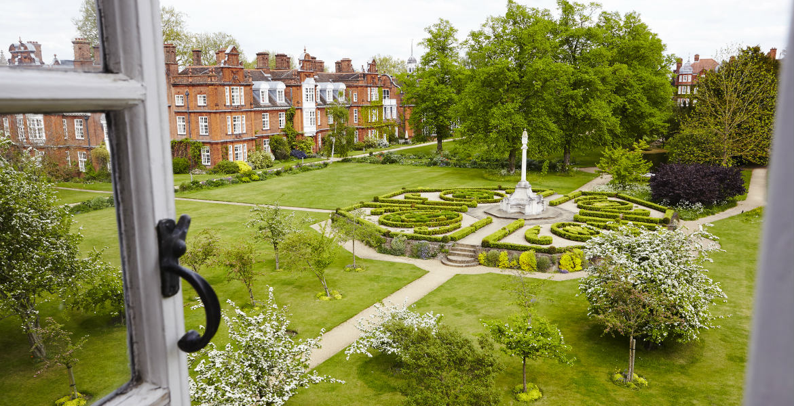

Representing the graduate student community at Newnham College
Click the green icons below for meal bookings & maintenance requests.
© Newnham MCR 2018
In Newnham we are lucky enough to have some of the loveliest college gardens in Cambridge, and unlike other college gardens students are free to wander around the grounds on the grass as they please. The gardens are looked after by our Head Gardener, Lottie Collis, and the gardens team, and they do a great job at making our surroundings look beautiful all year round. Overall there are 17 acres of gardens in Newnham, which on the main college grounds are split into two main sections; the main formal gardens and lawns which are surrounded on three sides by the main college buildings and the playing fields. During the summer the open lawns provide space for students to picnic outside, with their own food or takeaway food from the buttery. During the hottest months and when the library is at it’s busiest, the gardens also make a good alternative study space and benches are positioned around the grounds. In addition there are several little hideaways in and around the grounds, including a small benched pavilion by the old labs and woodland walk and a swing seat by the entrance to Eva Smith which can offer a little privacy and calm away from the rest of the college buildings. The main formal gardens are set adjacent the large playing fields, which also include tennis courts for the use of students. A barbecue is also set alongside the path between the main gardens and the playing fields which can be booked out by students. In addition to the main college gardens many of the graduate houses have their own gardens and green spaces by the house. These are for the use of the graduate students living there, and garden tables and chairs are available too. There is also a small paved courtyard set outside the library which is handy for a break from the library.

Given the large size of the gardens there are always lots of opportunities to get involved and help out in and around college. If you’re interested in growing your own food there is dedicated space for students in the college allotments which are located in the gardens of The Plightle on Newnham walk. The gardening club monitors the space and the crops planted, but anyone can access and use the space, and gardening equipment for students is kept in the garden. In order to get access to the allotments contact the MCR Environmental officer or speak to members of the gardening club at the college societies freshers fair. In addition to the allotments students are also able to help out with smaller gardening jobs in college and in the graduate houses. To find out more about what jobs are available contact either the MCR environmental officer or the head gardener. For any more information on the gardens please contact the MCR environmental officer or the head gardener . Further information on the history of the Newnham Gardens, and a photographic tour, are available on the college website pages dedicated to the gardens.